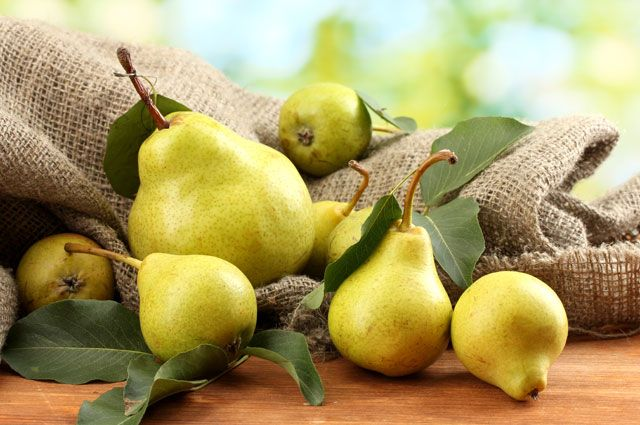
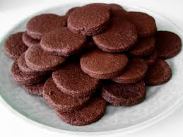
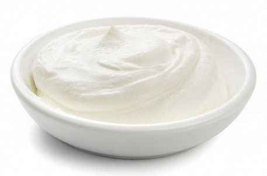
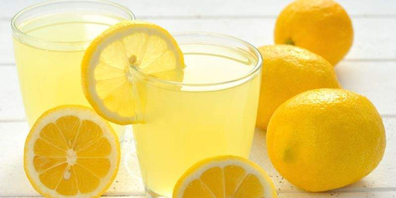
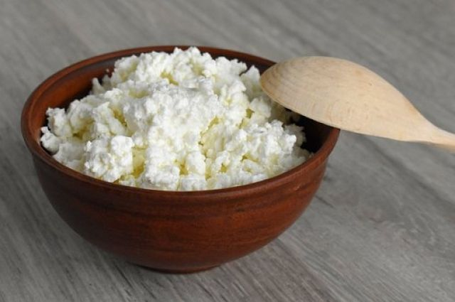

Информация о блюде
| Описание | Вкусный и полезный десерт. Быстро готовится и так же быстро съедается. Угощайтесь! |
| Каллории | 549 кКал |



2 ст.л.



250 гр

по вкусу

250 гр
Способ приготовления
- Творог протереть через сито. Добавить в творог сметану и сахарную пудру. Взбить массу в однородный крем.
- Фрукты вымыть, обсушить.
- У груш и яблока удалить семенные коробочки, у слив — косточки. Фрукты нарезать тонкими ломтиками, сбрызнуть лимонным соком.
- На дно стакана выложить часть творожно-сметанного крема, положить часть яблок.
- Далее — слой творожно-сметанного крема и часть нарезанных груш, снова крем.
- На крем выложить часть слив, сверху — опять слой крема. Аналогичным образом наполнить 2 других стакана. Шоколадное печенье измельчить в крошку и украсить десерт.
- Подать творожно-сметанный десерт к столу. Угощайтесь! Приятного аппетита!